【サカつく2026】リアクション環境が激変!?新SP「ハリー・ケイン」のFCバイエルン・ミュンヘンSP選手スカウトは引くべき？新SP選手11名を徹底評価
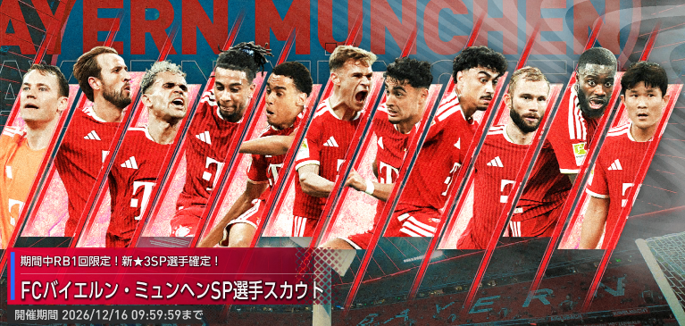
リアクション強化なら絶対に引くべき！ ただし、11名全員をコンプリートする必要はありません。当たり選手を確保したら撤退することが重要です。
★3排出率11％、全員リアクションの新SPが11名登場。今回の魅力は新金フォメコンだけでなく、既存編成まで強化できることです。手持ちの選手と比較しながら、どこまで引くべきかを解説します。
みんなは今回のガチャ引く？
先に結論｜リアクション強化なら絶対に引くべき！
リアクションを強化したい監督や始めたばかりの初心者なら、絶対に引くべきです。
優先して確保したい3名
ノイアー・ケイン・ウパメカノは既存のリアクション金フォメコンでも活躍する最高評価の選手。
全員コンプは不要
オリーズ・キミッヒ・ブラウンは新金フォメコンの重要枠。一方で代役や育成済み選手も考慮したいです。
ライマーも既存のリアクション金フォメコンの最強メンバーに採用される高性能なRB。ただし、11名全員が必須ではありません。
ガチャの開催期間と注目ポイント
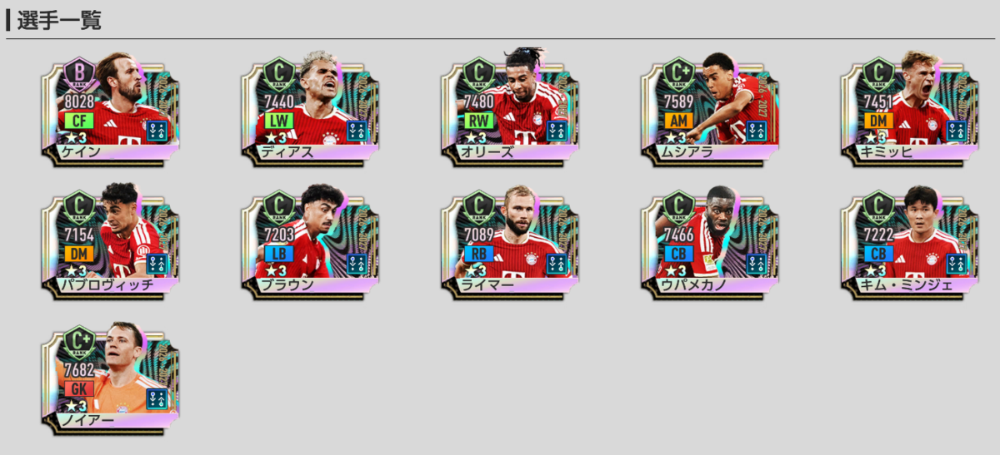
- 開催期間は2026年11月25日(水)メンテナンス終了から2026年12月16日(水)9時59分まで
- ★３の排出率は11%
- 排出される★3選手はFCバイエルン・ミュンヘンの選手11名のみ
- 3000RBの「1回限定★3確定10連ガチャ」はピックアップ1人確定
- 開催期間終了後、「FCバイエルン・ミュンヘンSP選手スカウト」に登場した★3SP選手は「SP選手スカウト」には追加されません。
- 開催期間終了後「FCバイエルン・ミュンヘンSP選手スカウトメダル」は1枚につき「SP選手スカウトメダル」1枚に変換されます。
今回の★3排出対象は11名のみ。前回のピックアップとは違い、3000RBの確定枠は対象選手のうち1名が確定します。
金フォメコン「ディー・ローテン'26」の実力
最強編成を狙うならノイアー・ブラウン・キミッヒ・オリーズの4名は必須級。ただし発動条件を満たすことと最強編成を作ることは別です。
ディー・ローテン'26
ノイアーは★3 SPでは代用不可。ほかの枠には互換候補があります。国籍人数による追加効果もないため、11名全員で揃える必要はありません。
フォメコン詳細既存リアクション金フォメコンとの比較
| 全体順位 | フォメコン | 補正後実数値 |
|---|---|---|
| 3位 | セレソン'70 | 227,689 |
| 5位 | ゴーデンゾーネン'95 | 224,821 |
| 6位 | ディー・ローテン'26 | 222,986 |
| 10位 | アルヴィネグロ・プライアーノ'11 | 222,254 |
| 12位 | セレソン・ダス・キナス'16 | 221,763 |
| 17位 | エンカルナードス'23 | 221,455 |
ディー・ローテンは全登録選手対象で6位。新コンボだけが目的でなく、既存編成にも強力な新SPを採用できる点が魅力です。
11月26日生成の最強フォメコンランキング・通常最強モード。ゲーム内のチーム総合力表示とは異なる17項目の補正後実数値です。
最強フォメコンランキングを見る★3排出率11％でもコンプリートは難しい
従来の★3提供割合5％と比べると2倍以上。ただし各選手は1％なので、100連で出る★3は平均11枚でも、重複があるため11人揃うとは限りません。
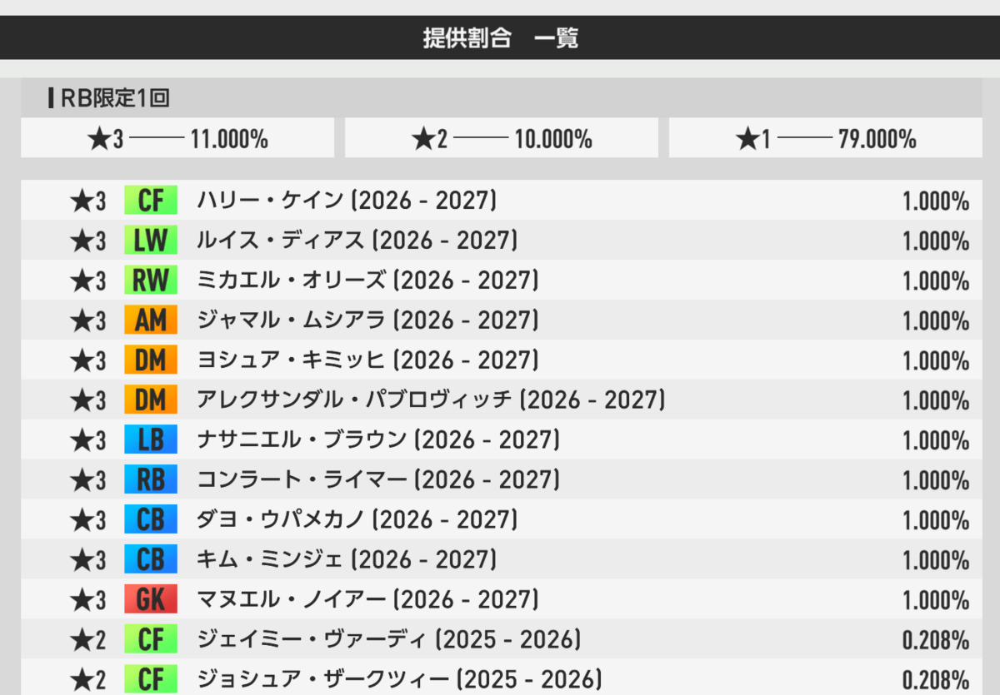
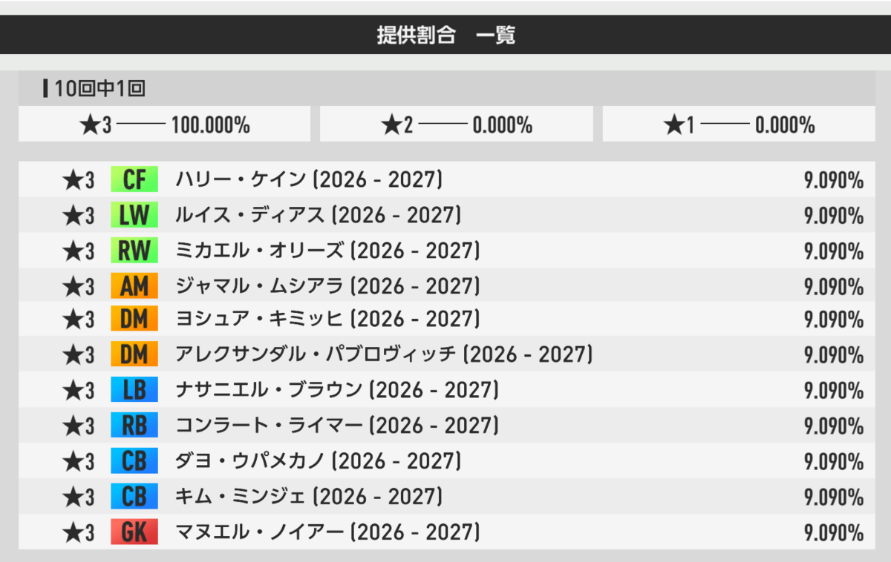
天井交換込みで11名揃う確率
各選手1％の独立抽選、200連ごとに未所持1名を天井交換するモデル。3000RB確定枠は除外。平均コンプリート回数は約239連（同モデルで再計算）。
200連して天井交換しても、コンプできるのは約2人に1人。だからこそ、当たり選手が揃い次第撤退するのが重要です。
開催期間が長く★3提供割合も高いので、1日1回の100RBを引くのはアリ。メダルは開催終了後に通常SPスカウトメダルへ変換されます。
新SP11名の獲得優先度Tier表
単体性能・フォメコンへの重要度・代用候補を踏まえた獲得優先度です。選手をタップすると詳細評価へ移動します。
新SP選手11名を徹底評価
最大強化総合力、詳細能力、スキル、既存選手との違いを確認しながら、獲得するべきかを判断します。
唯一のスイーパーGKⅢ。既存編成でも最強候補。
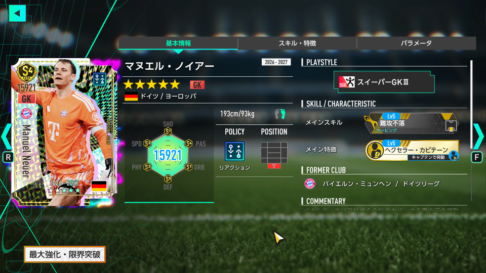
能力・スキルのポイント
詳細17項目を6カテゴリに集計。所持特徴発動時のデータで、最大強化総合力とは別の指標です。
- ヘクセラー・カピテーン金／キャプテン
- 広域の守護神銀／好調
- 反撃のロングキック銀／絶好調
スキル・詳細パラメータ画像を表示 2枚
ソニオTVの評価
リアクションGKでは第2位の総合力を持ち、さらに「スイーパーGKⅢ」のプレースタイルを持つ唯一無二の最強GK。
新しい金フォメコン「ディー・ローテン'26」の発動条件キー選手であり、SP選手では代用できない為、獲得する優先度は極めて高い。
さらに当サイトの「最強フォメコンランキング」では、現在入手不可選手まで含めたリアクション金フォメコンの内、「セレソン'70」を除いて全てスタメンに入る最強のGK。
総合力の競合は「アリソン」だが、詳細ステータスのPAS,DRB,DEF,PHYの4項目でノイアーが上回っており、更にフォメコン補正を加えるとリアクションGKではノイアーが最強。
 アリソンリアクション｜GK／オーソドックスGKⅡ｜入手可能15,928差 +7
アリソンリアクション｜GK／オーソドックスGKⅡ｜入手可能15,928差 +7詳細能力の数値比較
同プレースタイルの代用・互換選手 各最大3名
代用：同ポリシー・適性位置・プレースタイル
該当する★3 SP選手なし
互換：ポリシーを問わず同条件
該当する★3 SP選手なし
LvⅡにはⅡ・Ⅲ、LvⅢにはⅢのみ。入手可否は記事作成時点。異なるプレースタイルの競合は上の比較欄を参照。
ペレを超える総合力。確保したい新CF。
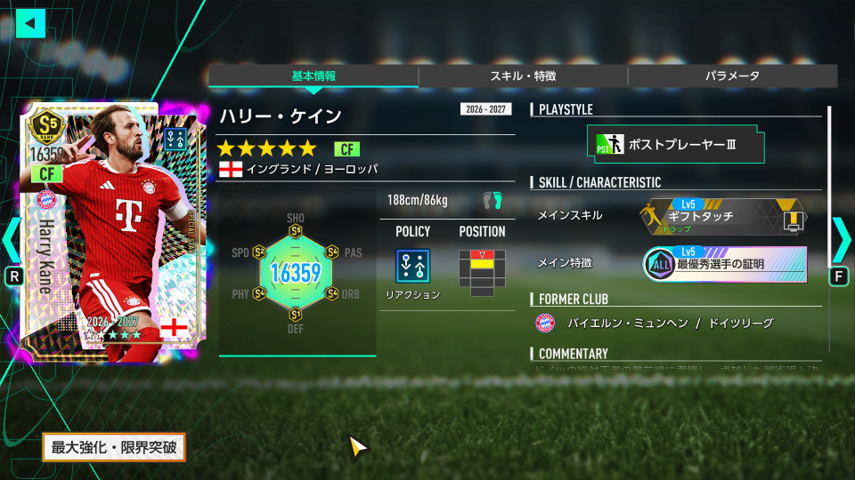
能力・スキルのポイント
詳細17項目を6カテゴリに集計。所持特徴発動時のデータで、最大強化総合力とは別の指標です。
- 最優秀選手の証明虹／なし
- 狙いすました強振銀／好調
- 懐の深いボールタッチ銀／絶好調
スキル・詳細パラメータ画像を表示 2枚
ソニオTVの評価
リアクションCFでは期間限定レジェンドSP「ペレ」を超える総合力を持つ、全SP選手最強のCF。
SP選手では初実装のプレースタイル「ポストプレーヤーⅢ」を所有しており、ペレと比較しても所持特徴、PAS、DRB,PHYの4項目で上位性能。
さらに当サイトの「最強フォメコンランキング」では、現在入手不可選手まで含めたリアクション金フォメコンの内、「セレソン'70」を除いて全てスタメンに入る最強のCF。
一方で、限界突破済みのペレを持っている場合は無理にケインにリソースを割く必要はないが、「数値上ではペレよりケインの方が上」という点は紛れもない事実で、獲得するべきCF。
詳細能力の数値比較
同プレースタイルの代用・互換選手 各最大3名
代用：同ポリシー・適性位置・プレースタイル
該当する★3 SP選手なし
互換：ポリシーを問わず同条件
該当する★3 SP選手なし
LvⅡにはⅡ・Ⅲ、LvⅢにはⅢのみ。入手可否は記事作成時点。異なるプレースタイルの競合は上の比較欄を参照。
ミリトンと並べたい歴代最高総合力のCB。
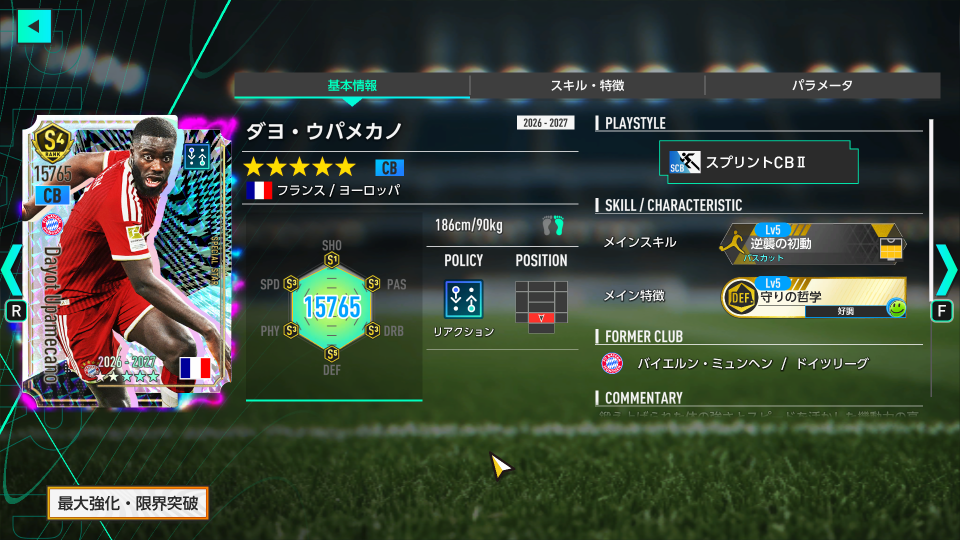
能力・スキルのポイント
詳細17項目を6カテゴリに集計。所持特徴発動時のデータで、最大強化総合力とは別の指標です。
- 守りの哲学金／好調
- パワーアジリティ銀／好調
- 快速のロングパサー銅／絶好調
スキル・詳細パラメータ画像を表示 2枚
ソニオTVの評価
リアクションCBでは歴代最高値の総合力を誇る最強CB。
DEF、PHY、SPDがトップクラスなのは当然ながら、さらにPASとDRBの値がCBとしては非常に高く、攻防どちらも隙が無い性能。
さらに当サイトの「最強フォメコンランキング」では、現在入手不可選手まで含めたリアクション金フォメコンのスタメンに入る最強のCB。
スプリントCBⅡは期間限定SP「CBエデル・ミリトン/ブラジル」で代用可能だが、現在のリアクション環境では「ウパメカノ＆ミリトン」のCBコンビが最強構成になる為、いずれにしても獲得優先度は高い。
詳細能力の数値比較
同プレースタイルの代用・互換選手 各最大3名
代用：同ポリシー・適性位置・プレースタイル
互換：ポリシーを問わず同条件
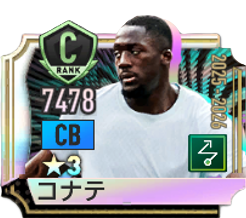
イブラヒマ・コナテムービング｜CB｜Lv215,775入手可能エデル・ミリトン〔2025-2026〕リアクション｜CB｜Lv215,538現在入手不可 藤井陽也(2026)カウンター｜CB｜Lv214,598入手可能
藤井陽也(2026)カウンター｜CB｜Lv214,598入手可能LvⅡにはⅡ・Ⅲ、LvⅢにはⅢのみ。入手可否は記事作成時点。異なるプレースタイルの競合は上の比較欄を参照。
新金フォメコンの右ウイングを担う本命。
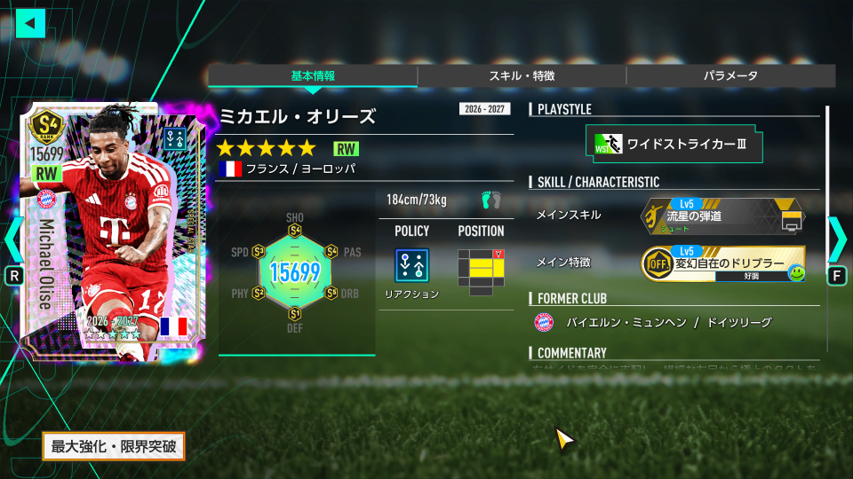
能力・スキルのポイント
詳細17項目を6カテゴリに集計。所持特徴発動時のデータで、最大強化総合力とは別の指標です。
- 変幻自在のドリブラー金／好調
- ムービングスナイパー銀／好調
- 精緻なパサー銅／絶好調
スキル・詳細パラメータ画像を表示 2枚
ソニオTVの評価
リアクションRWでは歴代最高値の総合力を誇る最強RW。
新しい金フォメコン「ディー・ローテン'26」の発動条件キー選手であり、詳細ステータスではDRB,DEF,SPDがトップクラスに高く、守備への貢献も期待できる。
さらに当サイトの「最強フォメコンランキング」では、現在入手不可選手まで含めたリアクション金フォメコンの内、「セレソン'70」を除く全ての3TOPでスタメンに入る最強のRW。
一方で、ワイドストライカーⅢを持つSP選手では、性能面では期間限定SP「ラミン・ヤマル/ポゼッション」や「リオネル・メッシ/ムービング」で代用可能な為、手持ち次第では獲得優先度は下がる。
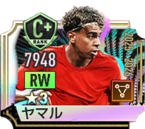
ラミン・ヤマルポゼッション｜RW／ワイドストライカーⅢ｜現在入手不可16,185差 +486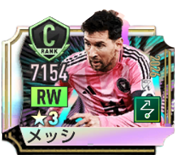
リオネル・メッシ〔2026〕ムービング｜RW／ワイドストライカーⅢ｜現在入手不可15,809差 +110詳細能力の数値比較
同プレースタイルの代用・互換選手 各最大3名
代用：同ポリシー・適性位置・プレースタイル
該当する★3 SP選手なし
互換：ポリシーを問わず同条件
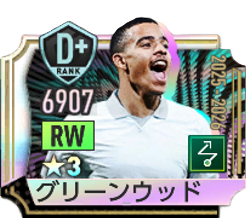
メイソン・グリーンウッドムービング｜RW｜Lv315,086入手可能LvⅡにはⅡ・Ⅲ、LvⅢにはⅢのみ。入手可否は記事作成時点。異なるプレースタイルの競合は上の比較欄を参照。
守備重視ならブラウン、攻撃重視ならカンセロ。
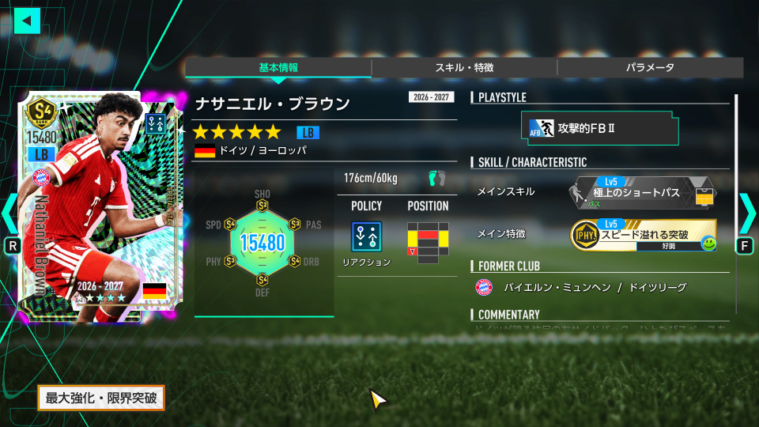
能力・スキルのポイント
詳細17項目を6カテゴリに集計。所持特徴発動時のデータで、最大強化総合力とは別の指標です。
- スピード溢れる突破金／好調
- ハードスティール銀／絶好調
- ムービングウォール銅／絶好調
スキル・詳細パラメータ画像を表示 2枚
ソニオTVの評価
リアクションLBでは歴代最高値の総合力を誇る最強LB。
新しい金フォメコン「ディー・ローテン'26」の発動条件キー選手であり、獲得する優先度は高い。
ただし発動条件は恒常★3SP「ジョアン・カンセロ」や第1弾のJリーグSP「長友佑都」で代用可能であり、性能面でもPASとDRBは「ジョアン・カンセロ」の方が数値が高い点は見逃せない。
ステータス面では「攻撃重視のカンセロ」と「守備重視のブラウン」という分け方ができる為、ジョアン・カンセロや長友の限界突破が進んでいる等、手持ち次第では獲得優先度は下がる。
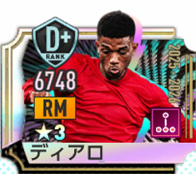
ジョアン・カンセロリアクション｜LB／攻撃的FBⅡ｜入手可能15,140差 -340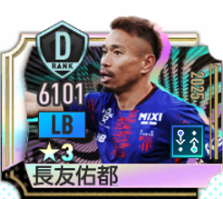
長友佑都リアクション｜LB／攻撃的FBⅡ｜現在入手不可14,682差 -798詳細能力の数値比較
同プレースタイルの代用・互換選手 各最大3名
代用：同ポリシー・適性位置・プレースタイル
互換：ポリシーを問わず同条件
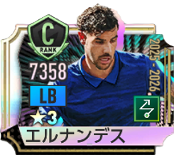
テオ・エルナンデスムービング｜LB｜Lv215,649入手可能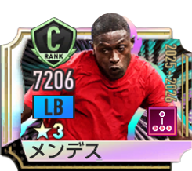
ヌーノ・メンデスカウンター｜LB｜Lv215,442入手可能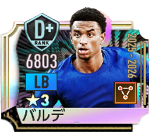
アレハンドロ・バルデポゼッション｜LB｜Lv215,399入手可能LvⅡにはⅡ・Ⅲ、LvⅢにはⅢのみ。入手可否は記事作成時点。異なるプレースタイルの競合は上の比較欄を参照。
ディー・ローテン採用の有無で優先度が変わる。
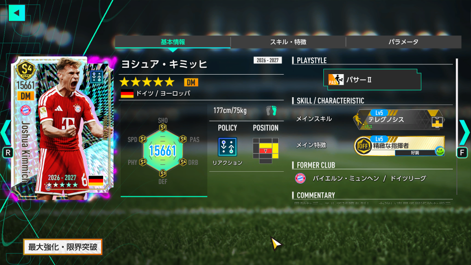
能力・スキルのポイント
詳細17項目を6カテゴリに集計。所持特徴発動時のデータで、最大強化総合力とは別の指標です。
- 精緻な指揮者金／好調
- 不屈の魂銀／好調
- リスクヘッジパサー銅／絶好調
スキル・詳細パラメータ画像を表示 2枚
ソニオTVの評価
リアクションDMパサーでは歴代最高値の総合力を誇る。
新しい金フォメコン「ディー・ローテン'26」の発動条件キー選手であり、獲得する優先度は高い。
ただし発動条件は恒常★3SP「ペドリ/ポゼッション」や「アダム・ウォートン/カウンター」で代用可能であり、むしろパサーという役割では「ペドリ/ポゼッション」の方が上位。
また、ディー・ローテン以外にパサーが発動条件のリアクション金フォメコンは現状存在しない為、「ディー・ローテン'26」を採用しない場合は獲得優先度は下がる。
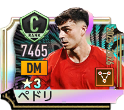
ペドリポゼッション｜DM／パサーⅡ｜入手可能15,694差 +33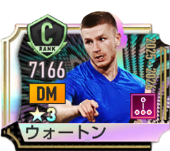
アダム・ウォートンカウンター｜DM／パサーⅡ｜入手可能15,343差 -318詳細能力の数値比較
同プレースタイルの代用・互換選手 各最大3名
代用：同ポリシー・適性位置・プレースタイル
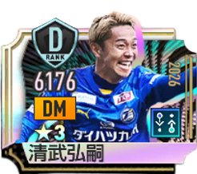
清武弘嗣(2026)リアクション｜DM｜Lv214,690入手可能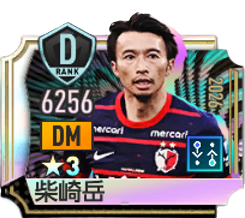
柴崎岳(2026)リアクション｜DM｜Lv214,651入手可能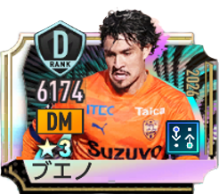
マテウス・ブエノ(2026)リアクション｜DM｜Lv214,632入手可能互換：ポリシーを問わず同条件
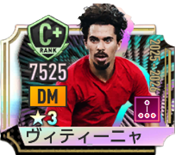
ヴィティーニャカウンター｜DM｜Lv315,753現在入手不可ペドリポゼッション｜DM｜Lv215,694入手可能鎌田大地〔2026〕カウンター｜DM｜Lv215,564現在入手不可LvⅡにはⅡ・Ⅲ、LvⅢにはⅢのみ。入手可否は記事作成時点。異なるプレースタイルの競合は上の比較欄を参照。
リアクションRBの最高総合力。ただし条件枠ではない。
能力・スキルのポイント
詳細17項目を6カテゴリに集計。所持特徴発動時のデータで、最大強化総合力とは別の指標です。
- ピッチの掃除屋銀／好調
- 疾走するパサー銀／絶好調
- すり抜けるロングパサー銅／好調
ソニオTVの評価
リアクションRBでは歴代最高値の総合力を誇る最強RB。
新しい金フォメコン「ディー・ローテン'26」の発動条件キー選手ではないが、リアクションRBの中では環境トップ性能の為、獲得する優先度は高い。
代用候補として、恒常★3SP「リース・ジェイムズ」がいるが、総合力、スキルと特徴の継承枠、詳細ステータス、あらゆる面でライマーが上位性能。
一方で、リアクションRBに拘らなければ、恒常★3SP「アクラフ・ハキミ/ポゼッション」や「マロ・ギュスト/ムービング」で代用可能な為、手持ち次第では優先度は下がる。
 リース・ジェイムズリアクション｜RB／守備的FBⅡ｜入手可能14,913差 -409アクラフ・ハキミポゼッション｜RB／攻撃的FBⅡ｜入手可能15,578差 +256マロ・ギュストムービング｜RB／守備的FBⅡ｜入手可能15,422差 +100
リース・ジェイムズリアクション｜RB／守備的FBⅡ｜入手可能14,913差 -409アクラフ・ハキミポゼッション｜RB／攻撃的FBⅡ｜入手可能15,578差 +256マロ・ギュストムービング｜RB／守備的FBⅡ｜入手可能15,422差 +100詳細能力の数値比較
同プレースタイルの代用・互換選手 各最大3名
代用：同ポリシー・適性位置・プレースタイル
 キム・ムンファン［K12025BEST11］リアクション｜RB｜Lv214,270現在入手不可
キム・ムンファン［K12025BEST11］リアクション｜RB｜Lv214,270現在入手不可互換：ポリシーを問わず同条件
LvⅡにはⅡ・Ⅲ、LvⅢにはⅢのみ。入手可否は記事作成時点。異なるプレースタイルの競合は上の比較欄を参照。
優秀なAMだがグリーズマンとの比較が重要。
能力・スキルのポイント
詳細17項目を6カテゴリに集計。所持特徴発動時のデータで、最大強化総合力とは別の指標です。
- 突破からの打開金／好調
- 俊敏なタッチ銀／絶好調
- 冷静なフィニッシュ銅／絶好調
ソニオTVの評価
リアクションAMでは歴代最高値の総合力を誇る最強AM。
さらに、ポリシー問わずSP選手のAMでは第3位の総合力を持ち、詳細ステータスではSHO,PASがトップクラス、DRB,DEFは最強格と非常に優秀。
一方で、プレースタイルが「アタッカーⅡ」の為、恒常★3SP「アントワーヌ・グリーズマン」が「アタッカーⅢ」で上位であり、代用可能。
更にグリーズマンは選手傾向もムシアラと同じ、詳細ステータスではPASはムシアラを上回っており、他ステータスもムシアラと互角の為、手持ち次第では優先度は下がる。
 アントワーヌ・グリーズマンリアクション｜AM／アタッカーⅢ｜入手可能15,484差 -248
アントワーヌ・グリーズマンリアクション｜AM／アタッカーⅢ｜入手可能15,484差 -248詳細能力の数値比較
同プレースタイルの代用・互換選手 各最大3名
代用：同ポリシー・適性位置・プレースタイル
 ハフィーニャリアクション｜AM｜Lv215,700現在入手不可マルコ・ロイス〔2026〕リアクション｜AM｜Lv215,496現在入手不可アントワーヌ・グリーズマンリアクション｜AM｜Lv315,484入手可能
ハフィーニャリアクション｜AM｜Lv215,700現在入手不可マルコ・ロイス〔2026〕リアクション｜AM｜Lv215,496現在入手不可アントワーヌ・グリーズマンリアクション｜AM｜Lv315,484入手可能互換：ポリシーを問わず同条件
 ウスマン・デンベレ〔2026〕ムービング｜AM｜Lv315,760現在入手不可
ウスマン・デンベレ〔2026〕ムービング｜AM｜Lv315,760現在入手不可 ジュード・ベリンガムカウンター｜AM｜Lv315,749入手可能ハフィーニャリアクション｜AM｜Lv215,700現在入手不可
ジュード・ベリンガムカウンター｜AM｜Lv315,749入手可能ハフィーニャリアクション｜AM｜Lv215,700現在入手不可LvⅡにはⅡ・Ⅲ、LvⅢにはⅢのみ。入手可否は記事作成時点。異なるプレースタイルの競合は上の比較欄を参照。
希少なLWドリブラーでも、既存の強力なLWがいる。
能力・スキルのポイント
詳細17項目を6カテゴリに集計。所持特徴発動時のデータで、最大強化総合力とは別の指標です。
- 多彩な足技金／好調
- ゴール前の落ち着き銀／好調
- 冷静な破壊者銅／好調
ソニオTVの評価
リアクションLWはSP選手では4人目で、総合力は第2位。
さらにリアクションLWドリブラーはSP選手では第2弾KリーグSP「チョン・ビョングァン」に続いて2人目と希少性が高く、総合力も上位。
一方で、リアクションLWには、限定SP「ヴィニシウス・ジュニオール/サイドアタッカーⅢ」や、最強の恒常★3SP「クヴィチャ・クヴァラツヘリア/サイドアタッカーⅢ」が存在しており、代用可能。
総合力ではディアスの方が上だが、SHO,DEF,PHYはディアス、PAS,DRB,SPDではクヴァラツヘリアが上の為、無理に狙う必要はない。
詳細能力の数値比較
同プレースタイルの代用・互換選手 各最大3名
代用：同ポリシー・適性位置・プレースタイル
互換：ポリシーを問わず同条件


LvⅡにはⅡ・Ⅲ、LvⅢにはⅢのみ。入手可否は記事作成時点。異なるプレースタイルの競合は上の比較欄を参照。

入手可能な同型CBでは首位。バストーニも健闘。
能力・スキルのポイント
詳細17項目を6カテゴリに集計。所持特徴発動時のデータで、最大強化総合力とは別の指標です。
- 瞬間の球際力銀／好調
- ハイタワーの天敵銀／好調
- スピードクラッシャー銅／途中出場
ソニオTVの評価
リアクションCBストッパーⅡは9人目の実装で、総合力は第2位。
さらに1位は期間限定SP「ブレーメル」で現在入手不可の為、入手可能SPでは第1位と、現環境最強のリアクションCBストッパーⅡという事になる。
ただしリアクションCBストッパーⅡは恒常★3SP「アレッサンドロ・バストーニ」で代用可能であり、性能面でもほぼ互角。
期間限定SP「ブレーメル」や恒常★3SP「アレッサンドロ・バストーニ」を持っているなら、無理に狙う必要はない。
詳細能力の数値比較
同プレースタイルの代用・互換選手 各最大3名
代用：同ポリシー・適性位置・プレースタイル
 植田直通［J12025BEST11］リアクション｜CB｜Lv214,594現在入手不可
植田直通［J12025BEST11］リアクション｜CB｜Lv214,594現在入手不可互換：ポリシーを問わず同条件
LvⅡにはⅡ・Ⅲ、LvⅢにはⅢのみ。入手可否は記事作成時点。異なるプレースタイルの競合は上の比較欄を参照。

パスは魅力だが、最強編成への採用には至らない。
能力・スキルのポイント
詳細17項目を6カテゴリに集計。所持特徴発動時のデータで、最大強化総合力とは別の指標です。
- 柔軟なキッカー銀／絶好調
- 懐の深いロングパサー銀／好調
- 長短のキック銅／好調
ソニオTVの評価
リアクションDMセントラルMFでは8人目の実装で、総合力は第4位。
総合力では第4位だが、詳細ステータスではPASの値は8人中で最も高く、選手傾向も他のDM選手と異なり「ロングパス+1」を持っている点は面白い。
とは言え、リアクションDMでは恒常★3SP「フェデリコ・バルベルデ」が「セントラルMFⅢ」と上位のプレースタイルを持っており、性能面も互角な為、代用可能。
むしろフォメコン補正を加えると、当サイトの最強フォメコンランキングでは、全ての金フォメコンで「パブロヴィッチ」はスタメン外の判定の為、最も低い評価とした。
詳細能力の数値比較
同プレースタイルの代用・互換選手 各最大3名
代用：同ポリシー・適性位置・プレースタイル
互換：ポリシーを問わず同条件
LvⅡにはⅡ・Ⅲ、LvⅢにはⅢのみ。入手可否は記事作成時点。異なるプレースタイルの競合は上の比較欄を参照。
まとめ｜当たり選手を確保したら撤退
リアクション強化や初心者なら絶対に引くべきガチャ。特にノイアー・ケイン・ウパメカノは既存の金フォメコンまで強化する最高評価です。
ディー・ローテンの最強を目指すならオリーズ・ブラウン・キミッヒも優先。ただし限界突破済みの競合選手がいるなら、すべてを追う必要はありません。
排出率11％でもコンプは容易ではありません。自分に必要な当たり選手が揃い次第撤退。毎日の100RBも活用しながら、手持ちに合った強化を目指しましょう。
手持ちの選手と比べる
参考：公式お知らせ、ゲーム内提供割合・攻略DB登録データ。